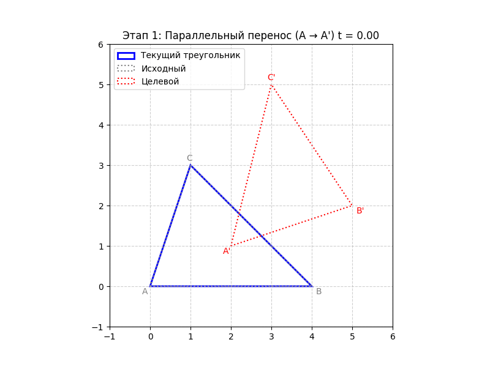

Аффинные преобразования и аффинная геометрия#
Введение#
Aффинная геометрия — геометрия, которая изучает свойства фигур, сохраняющиеся при аффинных преобразованиях.
Аффинное преобразование – это такое преобразование плоскости (или пространства), которое переводит прямые в прямые, но при этом может «растягивать» и «сжимать» фигуры в разных направлениях по-разному. Параллельные прямые остаются параллельными, но углы и длины меняются. Именно этот класс преобразований и порождает аффинную геометрию.
1. Определение аффинного преобразования#
1.1. Интуитивное определение#
Аффинное преобразование плоскости — это взаимно однозначное отображение плоскости на себя, при котором образ любой прямой является прямой.
В отличие от движений (евклидовых преобразований), аффинное преобразование не обязано сохранять расстояния и углы. Однако оно сохраняет линейную структуру: точки, лежащие на одной прямой, переходят в точки, также лежащие на одной прямой.
Важное замечание. Вращение, параллельный перенос, отражение — всё это частные случаи аффинных преобразований, потому что они переводят прямые в прямые.
1.2. Аналитическое определение#
В системе координат аффинное преобразование записывается с помощью линейных функций:
где коэффициенты \((a_1, b_1, a_2, b_2)\) таковы, что определитель матрицы
(это обеспечивает взаимную однозначность). Слагаемые \((c_1, c_2)\) отвечают за параллельный перенос.
Если добавить третью координату (для пространства), формулы аналогичны.
2. Свойства аффинных преобразований#
2.1. Основные свойства#
Прямая переходит в прямую. Это следует из определения.
Сохраняется параллельность. Если две прямые параллельны, то их образы также параллельны.
Сохраняется отношение отрезков на одной прямой.
Если точка \((C)\) делит отрезок \((AB)\) в отношении \((AC:CB = \lambda)\), то её образ \((C')\) делит образ \((A'B')\) в том же отношении \((\lambda)\).
Следствие: середина отрезка переходит в середину образа.Параллелограмм переходит в параллелограмм.
(Потому что середины диагоналей совпадают, и свойство параллельности сохраняется.)Композиция (последовательное выполнение) двух аффинных преобразований снова является аффинным преобразованием.
Это легко проверить аналитически: произведение двух невырожденных матриц — невырожденная матрица, а сдвиги складываются.
2.2. Что не сохраняется?#
Длины отрезков — меняются (кроме частных случаев).
Углы — в общем случае не сохраняются.
Окружность — переходит в эллипс (или, в частных случаях, в окружность).
Форма фигуры — может сильно искажаться (например, квадрат может стать произвольным параллелограммом).
2.3. Важный пример: сжатие к прямой#
Рассмотрим преобразование, которое оставляет неподвижной ось \((x)\) и сжимает (или растягивает) расстояния до этой оси в постоянное число раз. Аналитически:
При \((0 < k < 1)\) — сжатие к оси \((x)\); при \((k > 1)\) — растяжение.
Это аффинное преобразование (прямые остаются прямыми).
Такое преобразование часто называют однородной деформацией вдоль оси \((y)\).
3. Примеры аффинных преобразований#
3.1. Параллельный перенос#
Матрица — единичная. Сохраняет все расстояния.
3.2. Поворот вокруг начала координат#
Матрица ортогональна (определитель = 1). Тоже движение.
3.3. Гомотетия (растяжение от центра)#
Увеличивает расстояния в \((|\lambda|)\) раз, сохраняет углы (но не длины). Это преобразование подобия, частный случай аффинного.
3.4. Сжатие к оси (уже упомянуто)#
3.5. Сдвиг (трансвекция)#
При этом вертикальные прямые остаются вертикальными, а горизонтальные — наклоняются. Площади сохраняются (определитель = 1), но углы и длины меняются. Пример сдвига: превращение прямоугольника в параллелограмм той же площади.
4. Аффинная эквивалентность треугольников#
Это центральная теорема аффинной геометрии.
Теорема. Любые два треугольника на плоскости аффинно эквивалентны, то есть существует аффинное преобразование, переводящее один треугольник в другой.
Доказательство (идея).
Возьмём два произвольных треугольника \((ABC)\) и \((A'B'C')\). Существует единственное аффинное преобразование, которое переводит точки \((A, B, C)\) соответственно в \((A', B', C')\).
Почему? Потому что можно сначала перевести \((A)\) в \((A')\) параллельным переносом, затем совместить направления сторон с помощью линейного преобразования (матрицей \((2\times2)\)), которое отображает векторы \((AB)\) и \((AC)\) в \((A'B')\) и \((A'C')\). Эта матрица будет невырожденной, так как векторы \((AB, AC)\) линейно независимы (треугольник невырожденный).
Таким образом, искомое аффинное преобразование существует и единственно.

Следствие. В аффинной геометрии все треугольники одинаковы. Нет понятий «равносторонний», «прямоугольный», «равнобедренный» — эти свойства не сохраняются при аффинных преобразованиях. Есть просто «треугольник».
Вопрос: А как же тогда в аффинной геометрии определить, что такое медиана? Очень просто: медианой называют отрезок, соединяющий вершину с серединой противоположной стороны. Поскольку середины сторон сохраняются при аффинных преобразованиях (свойство 3), то и медианы переходят в медианы. Теорема о пересечении медиан в одной точке и делении их в отношении 2:1 также сохраняется, так как она основана только на аффинных понятиях. Поэтому она верна в аффинной геометрии и может быть доказана для любого треугольника, например, для равностороннего (с помощью симметрии), а затем распространена на все треугольники с помощью аффинного преобразования.
5. Аффинная геометрия как геометрия группы#
С точки зрения Клейна, аффинная геометрия — это теория, изучающая свойства фигур, инвариантные относительно группы аффинных преобразований.
Инварианты аффинной геометрии:
Прямолинейное расположение точек.
Параллельность прямых.
Отношение, в котором точка делит отрезок (в частности, середины отрезков).
Отношение площадей (если фигуры лежат в одной плоскости).
Свойство быть параллелограммом.
Пересечение прямых.
Что не является инвариантом:
Длины, углы.
Форма (треугольник может быть любым).
Наличие вписанной или описанной окружности.
Важное замечание: В аффинной геометрии нет понятия «окружность» как выделенной кривой. Есть понятие эллипс — образ окружности при аффинном преобразовании. Но поскольку все эллипсы аффинно эквивалентны, выделенного «круглого» объекта нет.
6. Физическая интерпретация: однородные деформации#
В физике аффинные преобразования (с точностью до переноса) называются однородными деформациями. Они описывают, как деформируется тело, если его растягивать (или сжимать) в разных направлениях с разными коэффициентами, но без изгибов и скручиваний. Пример: резиновый лист, который равномерно растягивают вдоль одной оси и сжимают вдоль другой.
Матрица аффинного преобразования (без переноса) — это тензор деформации (в линейном приближении). Именно поэтому аффинные преобразования важны в механике сплошных сред, теории упругости и кристаллографии.
7. Связь с проективной геометрией#
Мы уже говорили, что группа аффинных преобразований является подгруппой группы проективных преобразований. Чтобы убедиться в этом, достаточно добавить к евклидовой плоскости бесконечно удалённую прямую и рассматривать проективные преобразования, которые оставляют эту прямую инвариантной (как множество). Тогда ограничение на обычную плоскость даёт аффинное преобразование.
Иными словами, аффинная геометрия — это проективная геометрия с выделенной прямой (бесконечно удалённой), которая остаётся неподвижной. Этот взгляд позволяет единообразно описывать многие геометрические явления.
8. Резюме и выводы#
Аффинное преобразование — взаимно однозначное отображение плоскости, переводящее прямые в прямые. Аналитически задаётся линейными функциями с ненулевым определителем.
Свойства: сохраняет параллельность, отношения отрезков на прямой, середины отрезков, параллелограммы. Не сохраняет длины, углы, окружности.
Все треугольники аффинно эквивалентны. Поэтому в аффинной геометрии нет разницы между равносторонним и произвольным треугольником.
Аффинная геометрия — это геометрия группы аффинных преобразований. Её инварианты — линейные и аффинные соотношения.
Физический смысл: однородные деформации твёрдого тела.
Место в иерархии: движения ⊂ подобия ⊂ аффинные ⊂ проективные преобразования.